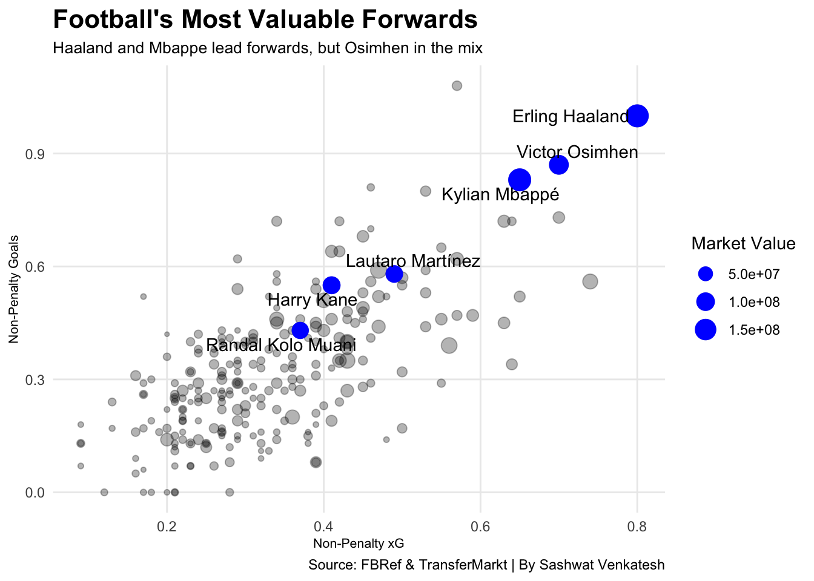
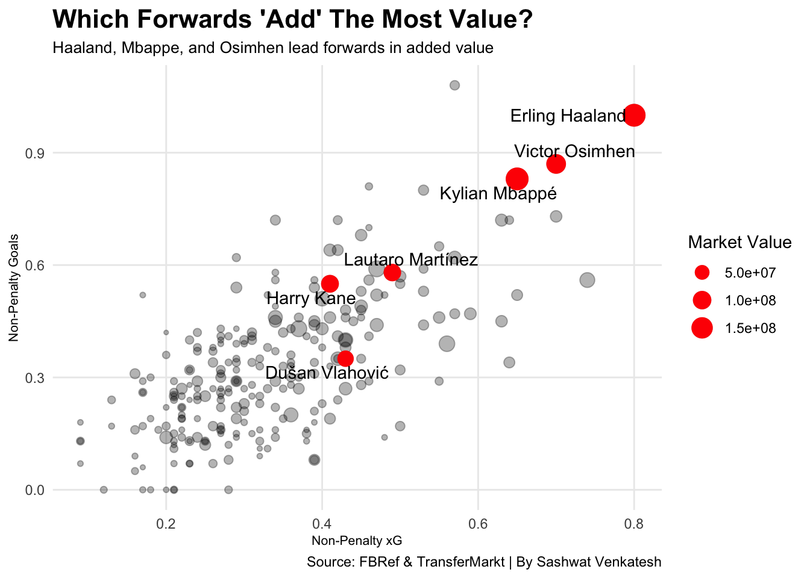
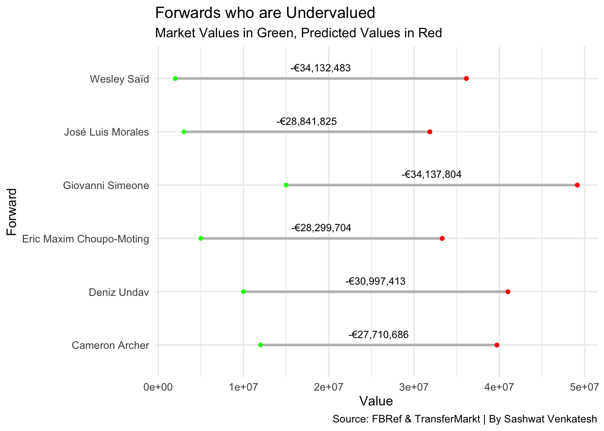
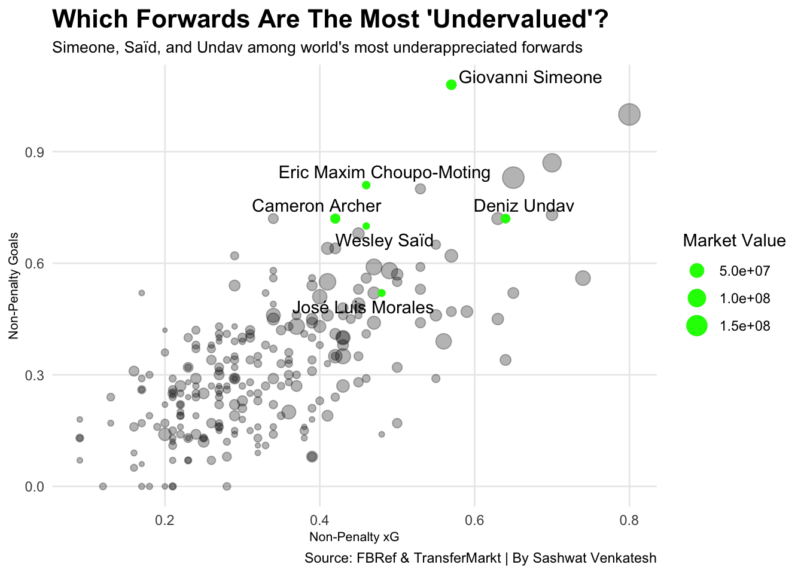

For Players, Scoring Matters. But Shouldn’t Other Things Too?
news
Author
Sashwat Venkatesh
Published
December 11, 2023
In world football, especially in modern football, nailing transfer business is absolutely an integral part of owning a club. Players like Erling Haaland, Cristiano Ronaldo, and Jude Bellingham are all examples of what a club can get if they accurately value and pay to acquire the best players.
Erling Haaland won the Premier League’s Golden Boot, along with its Most Valuable Player Award, in his first season at Manchester City. Cristiano Ronaldo became a Real Madrid and football legend after being acquired from Manchester United, and Jude Bellingham looks to be the next in line of young talents looking to stamp their mark on history after a summer transfer from Borussia Dortmund to Real Madrid.
But what actually drives a player’s value? For forwards, it must be more than just “how much does a striker score?”, right? As an evolution of my previous piece on transfer value adjustments, I’ve decided to look at what makes forwards valuable in the market.
Some notes before we get started:
My dataset has (de)-evolved considerably, depending on who you ask. My initial data came entirely from TransferMarkt, an online aggregator of football statistics and player valuations. Now, I’ve added FootballReference’s scouting report data, which provides per90 minute data on players. I chose per90 to add some sort of standardization to the comparisons between players. Inherently, players who score more will have higher per90 goal-scoring statistics, but we shouldn’t penalize players for being efficient subsitutes too.
Furthermore, I’m only looking at present year data. That is to say, the following assumption/consideration is being made: A player’s value (given by TransferMarkt in the summer window of 2023), is an CURRENT AND ACCURATE measurement on which we can make predictions on what contributes to forward player values. For example, Erling Haaland’s current market value is given as €180,000,000, and his scouting report statistics cover his last 365 days of playing. Effectively, we are taking the player’s last year of competition (domestic and national team), and using that to forecast current market value.
The data itself comes from this Kaggle dataset. For an example of what a scouting report looks like, see the table titled “Kylian Mbappé Scouting Report” here: Mbappe Scouting Report. My TransferMarkt Data also comes from Kaggle, via a scraper that pushes through TransferMarkt following the completion of the week’s games. Here is one of the files I used: Scraped TransferMarkt Data
We’ll do some code narration here. In the above two code blocks, I’ve imported the two chunks of TransferMarkt data that I need. The first dataframe contains every player valuation that TransferMarkt has assigned in the last ten years. The second dataframe has player names, a unique id in TransferMarkt’s database, and other supporting details like club and league names/ids, which aren’t particularly important. The functions in the second body of code retrieve a player’s summer 2023 valuation for use in the analysis that will follow later on.
In the above table, we can see the coefficients that are provided as outputs of our multiple regression model. In this situation, we’ve used Elastic Net Regression due to its combination of regularization, as well as its key feature of variable selection. Variable selection in regression models allows us to find the variables/predictors that are most relevant (not equal to 0).
Non-Penalty xG
Non-Penalty Goals
Assists
Non-Penalty xG + xAG
Progressive Carries
Touches Attacking Penalty Area
Successful Take-Ons
Pass Completion %
Tackles
Blocks
Interestingly, Tackles and Blocks, two defensive statistics, are negatively correlated with forward value, indicating that forwards who are forced into more defensive actions are likely less valuable than those who participate in their team’s defense less. Depending on your school of thought when it comes to attackers, this can either agree with or go against your valuation of forwards. Some managers, clubs, and fans prefer forwards who track back and support their defenders in winning back possesion, while others prefer those who stay forward and are ready to capitalize on a counter as fast as possible once midfielders/defenders regain possesion.
Another interesting point are the factors that the model eliminated:
Total Shots
xAG
Shot Creating Actions
Passes Attempted
Progressive Passes
Progressive Passes Received
Interceptions
Clearances
The model, unsurprisingly, tells us that Non-Penalty xG and Goals are the two most important factors in a forward’s valuation. More surprisingly, though, Progressive Carries and Touches in the Attacking Penalty Area were valued quite highly as well, the two factors that were most valuable outside of statistics tied directly to goals.
Valuation Analysis
Roughly, we can take the difference between a player’s market value and predicted value to be either the value added (when the difference is positive) or the undervaluation (when the difference is negative). So when we see:
Negative differential values, it means that a player's market value is lower than their predicted value. This would indicate, with some level of confidence, that the player is undervalued.
Positive differential values, it means that a player is either:
Overvalued
Has some unquantifiable reasoning behind a higher value. This can be caused by missing factors in the data used in this investigation, or by some "potential" that can't be expressed through statistical methods.
Code
final <- new_data |>select(Name, `Market Value`, `Predicted Value`, Differential)lt1m <-sum(final$Differential <0)print(paste("Number of players with predicted values higher than market values:", as.character(lt1m)))
[1] "Number of players with predicted values higher than market values: 153"
We can see that over hald of the players in our dataset have a negative differential. This indicates that there are a handful of values above the predicted value line that skews the output of the regression. This would indicate some level of significance and accuracy in the model we’ve generated. If we adjust for these outliers, there’s a hint that we would be able to get greater accuracy from our model.
Code
suppressMessages(library(ggbeeswarm))bubbledata1 <-head(new_data |>arrange(desc(`Market Value`)))#bubbledataggplot() +geom_point(data = new_data, aes(x=`Non-Penalty xG`, y=`Non-Penalty Goals`, size=`Market Value`), alpha=0.3) +geom_point(data = bubbledata1, aes(x=`Non-Penalty xG`, y=`Non-Penalty Goals`, size=`Market Value`), color="blue") +geom_text_repel(data = bubbledata1, aes(x=`Non-Penalty xG`, y=`Non-Penalty Goals`, label=Name)) +labs(title="Football's Most Valuable Forwards", subtitle="Haaland and Mbappe lead forwards, but Osimhen in the mix", caption="Source: FBRef & TransferMarkt | By Sashwat Venkatesh") +theme_minimal() +theme(plot.title =element_text(size =16, face ="bold"),axis.title =element_text(size =8), plot.subtitle =element_text(size=10), panel.grid.minor =element_blank() )

Looking at our first graph, which plots Non-Penalty Goals against Non-Penalty Expected Goals, scaling point size with market value, we can easily see who our 5 most valuable forwards in the world are.
Erling Haaland currently leads a Manchester City team looking to repeat their continental treble from the 2022-23 season, and broke the Premier League’s goalcsoring record last year. Kylian Mbappe, who has been considered by many the heir to the throne of world football, is valued highly as well, tracking with his 4 consecutive French League Golden Boots and back to back FIFA World Cup Final appearances. Victor Osimhen, the Nigerian striker who led Napoli to last year’s Serie A title (while picking up striker of the season) finds himself in a similar statistical category as Mbappe and Haaland, with a strong (>1) npG/npxG ratio.
Rounding out the top six are three other top household-name forwards:
Lautaro Martinez, Inter Milan’s star frontman is on the verge of signing what is assuredly an extremely large contract extension to stay in Milan. Harry Kane and Randal Kolo Muani both completed big money transfers this summer, for 110,000,000 Euros to Bayern Munich and 95,000,000 Euros to Paris Saint-Germain, respectively. These three strikers find themselves in similar company, sharing a similar npG/npxG ratio. Interestingly, though, Martinez, Kane, and Kolo Muani all find themselves closer to the larger grouping of forwards in Europe, rather than the clear outliers that are Haaland, Osimhen, and Mbappe.
Code
diff <-head(final |>arrange(desc(Differential)))ggplot() +geom_dumbbell(data=diff, aes(y=Name, x=`Market Value`, xend=`Predicted Value`),color ="grey",colour_x ="green",colour_xend ="red", size=1) +geom_text(data = diff,aes(y = Name,x = (`Market Value`+`Predicted Value`) /2, # Position text at the middle of the dumbbelllabel = scales::comma(Differential, prefix ="\u20AC") # Show numerical difference as a label with 2 decimal places ),vjust =-1, # Center labels verticallysize =3# Adjust label size as needed ) +theme_minimal() +ylab("Forward") +xlab("Value") +labs(title="Forwards With Most Added Value", subtitle="Market Values in Green, Predicted Values in Red", caption="Source: FBRef & TransferMarkt | By Sashwat Venkatesh")
Warning: Using the `size` aesthetic with geom_segment was deprecated in ggplot2 3.4.0.
ℹ Please use the `linewidth` aesthetic instead.
Code
bubbledata2 <-head(new_data |>arrange(desc(`Differential`)))#bubbledataggplot() +geom_point(data = new_data, aes(x=`Non-Penalty xG`, y=`Non-Penalty Goals`, size=`Market Value`), alpha=0.3) +geom_point(data = bubbledata2, aes(x=`Non-Penalty xG`, y=`Non-Penalty Goals`, size=`Market Value`), color="red") +geom_text_repel(data = bubbledata2, aes(x=`Non-Penalty xG`, y=`Non-Penalty Goals`, label=Name)) +labs(title="Which Forwards 'Add' The Most Value?", subtitle="Haaland, Mbappe, and Osimhen lead forwards in added value", caption="Source: FBRef & TransferMarkt | By Sashwat Venkatesh") +theme_minimal() +theme(plot.title =element_text(size =16, face ="bold"),axis.title =element_text(size =8), plot.subtitle =element_text(size=10), panel.grid.minor =element_blank() )

Looking at forwards that have market values above their predicted value, we see that five of the top six most valuable forwards remain in the top six of the forwards with the most value above prediction. For players like Haaland, Mbappe, and Osimhen, who are talismanic goalscorers, this makes some amount of sense. The rate at which they score goals and almost carry their teams is far beyond any value that can be assigned, which is represented in the difference between market and predicted value.
Interestingly, the six forwards present in this group have an average age of 25. In the transfer business, age and future potential (a remarkably hard thing to quantify) play an extremely pivotal role. It is unsprising that the new addition on this list, Dusan Vlahovic, is 23 years of age, indicating the power of future potential.
Code
diff <-head(final |>arrange(Differential))ggplot() +geom_dumbbell(data=diff, aes(y=Name, x=`Market Value`, xend=`Predicted Value`),color ="grey",colour_x ="green",colour_xend ="red", size=1) +geom_text(data = diff,aes(y = Name,x = (`Market Value`+`Predicted Value`) /2, # Position text at the middle of the dumbbelllabel = scales::comma(Differential, prefix ="\u20AC") # Show numerical difference as a label with 2 decimal places ),vjust =-1, # Center labels verticallysize =3# Adjust label size as needed ) +theme_minimal() +ylab("Forward") +xlab("Value") +labs(title="Forwards With Most Added Value", subtitle="Market Values in Green, Predicted Values in Red", caption="Source: FBRef & TransferMarkt | By Sashwat Venkatesh")

Code
bubbledata3 <-head(new_data |>arrange(`Differential`))#bubbledata3ggplot() +geom_point(data = new_data, aes(x=`Non-Penalty xG`, y=`Non-Penalty Goals`, size=`Market Value`), alpha=0.3) +geom_point(data = bubbledata3, aes(x=`Non-Penalty xG`, y=`Non-Penalty Goals`, size=`Market Value`), color="green") +geom_text_repel(data = bubbledata3, aes(x=`Non-Penalty xG`, y=`Non-Penalty Goals`, label=Name)) +labs(title="Which Forwards Are The Most 'Undervalued'?", subtitle="Simeone, Saïd, and Undav among world's most underappreciated forwards", caption="Source: FBRef & TransferMarkt | By Sashwat Venkatesh") +theme_minimal() +theme(plot.title =element_text(size =16, face ="bold"),axis.title =element_text(size =8), plot.subtitle =element_text(size=10), panel.grid.minor =element_blank() )

Conversely, looking at players who are significantly undervalued, we would expect to find players who are relatively unknown or don’t play a lot, but make an impact when they do play. It is therefore absolutely unsurprising that the top six in under-valuation are the opposite of the over-valuation’s top six. Giovanni Simeone, the model’s “most undervalued” forward in Europe, has played a total of 348 minutes this season, equating to less than 4 90s, and has scored twice. His average appearance is just under 21 minutes of playing time, so given more time, his performance at scale would show that he is a productive forward, comparing to the likes of Inter Milan pair Marcus Thuram and Lautaro Martinez.
Of course, the age old saying is that no model is perfect. That saying definitely carries here. Is it easy to say that Erling Haaland isn’t actually worth 180,000,000 Euros? Absolutely. But is it easy to assign him a more accurate value? Absolutely not. Of note, when looking at the coefficients in a standardized setting, we can get an estimated parameter contribution to a forward’s valuation. In what was never a surprise, the statistics that contribute to almost two-thirds of a forward’s valuation are non-Penalty Goals, Assists, and non-penalty Expected Goals. Surprisingly, progressive carries had a strong contribution to the model, coming in around 12%
In conclusion, it’s easy to see that figuring out a better value for football’s forwards is a necessary task. There seem to be a wide variety of mis-priced forwards, and the market’s ever-increasing and inflated values make this task increasingly difficult, but with this start, perhaps there’s a more refined model to build and improve on from here.